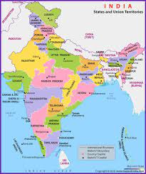

India, officially the Republic of India (Hindi: Bhārat Gaṇarājya), is a country in South Asia. It is the seventh-largest country by area, the second-most populous country, and the most populous democracy in the world.
Bounded by the Indian Ocean on the south, the Arabian Sea on the southwest, and the Bay of Bengal on the southeast, it shares land borders with Pakistan to the west;China, Nepal, and Bhutan to the north; and Bangladesh and Myanmar to the east.
In the Indian Ocean, India is in the vicinity of Sri Lanka and the Maldives; its Andaman and Nicobar Islands share a maritime border with Thailand, Myanmar and Indonesia.The Republic of India has several official national symbolsincluding a historical document
The current population of India is 1,400,976,358 as of Tuesday, January 18, 2022, based on Worldometer elaboration of the latest United Nations data.A district is an administrative division of an Indian state or territory.
By 55,000 years ago, the first modern humans, or Homo sapiens, had arrived on the Indian subcontinent from Africa, where they had earlier evolved.
The earliest known modern human remains in South Asia date to about 30,000 years ago.After 6500 BCE, evidence for domestication of food crops and animals, construction of permanent structures, and storage of agricultural surplus appeared in Mehrgarh
and other sites in what is now Balochistan, Pakistan.These gradually developed into the Indus Valley Civilisation,the first urban culture in South Asia,which flourished during 2500–1900 BCE in what is now Pakistan and western India.Centred around cities such as Mohenjo-daro, Harappa, Dholavira, and Kalibangan, and relying on varied forms of subsistence,
the civilisation engaged robustly in crafts production and wide-ranging trade.During the period 2000–500 BCE, many regions of the subcontinent transitioned from the Chalcolithic cultures to the Iron Age ones.
The Vedas, the oldest scriptures associated with Hinduism,[79] were composed during this period,[80] and historians have analysed these to posit a Vedic culture in the Punjab region and the upper Gangetic Plain.
Most historians also consider this period to have encompassed several waves of Indo-Aryan migration into the subcontinent from the north-west.The caste system, which created a hierarchy of priests, warriors, and free peasants, but which excluded indigenous peoples by labelling their occupations impure, arose during this period.
On the Deccan Plateau, archaeological evidence from this period suggests the existence of a chiefdom stage of political organisation.In South India, a progression to sedentary life is indicated by the large number of megalithic monuments dating from this period,[82] as well as by nearby traces of agriculture, irrigation tanks, and craft traditions.